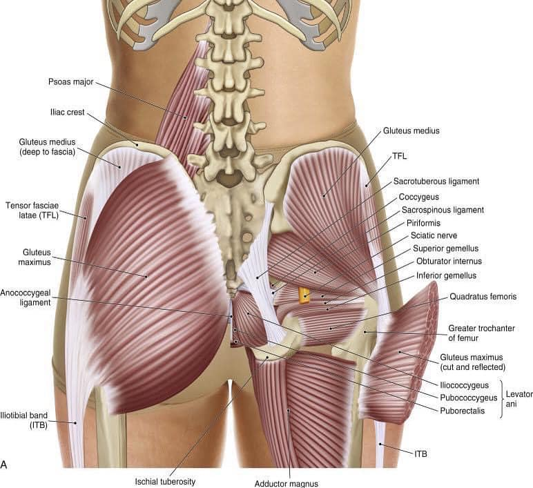

調骨盆，到底在調什麼？談骨盆的「回正能力」
💡調骨盆到底要調什麼?
骨盆，由左右髂骨與薦椎共同構成，其內裝載重要臟器，本身也承擔起傳遞身體力量流動的中繼站，使肢體動作更順暢來完成日常生活中的所有行為。
生活中，常見許多人在「調骨盆、把骨盆調正」，到底是在調什麼？
每個人的骨盆都一定要處在”正確“的位置上嗎？這個正確位置是絕對的嗎？
當然不是！
其實，調骨盆，就是在調「骨盆的回正能力」，
換句話說，就是把「能夠隨著日常活動而變化調節的骨盆活動能力」給找回來。
既然如此，要調骨盆，就必須先找出讓骨盆的活動能力喪失的原因，
可能是關節囊、韌帶受損，可能是肌肉筋膜張力的牽拉，也可以是骨骼關節位置的相對錯移。
以上都需要精密與仔細的檢查、觸摸及診斷。短暫的檢查、快速的治療、一體適用的方法，是無法真正解決骨盆多角度錯位的複雜性問題。
具備能隨著日常動作而有相應變化的骨盆，才是健康的骨盆，健康的骨盆，便能支持生活中的各種活動變化而不產生疼痛。
這次就先聊到這邊，祝大家都有個健康而靈活的骨盆！
#調骨盆
太初中醫診所
中醫師 黃彥鈞
